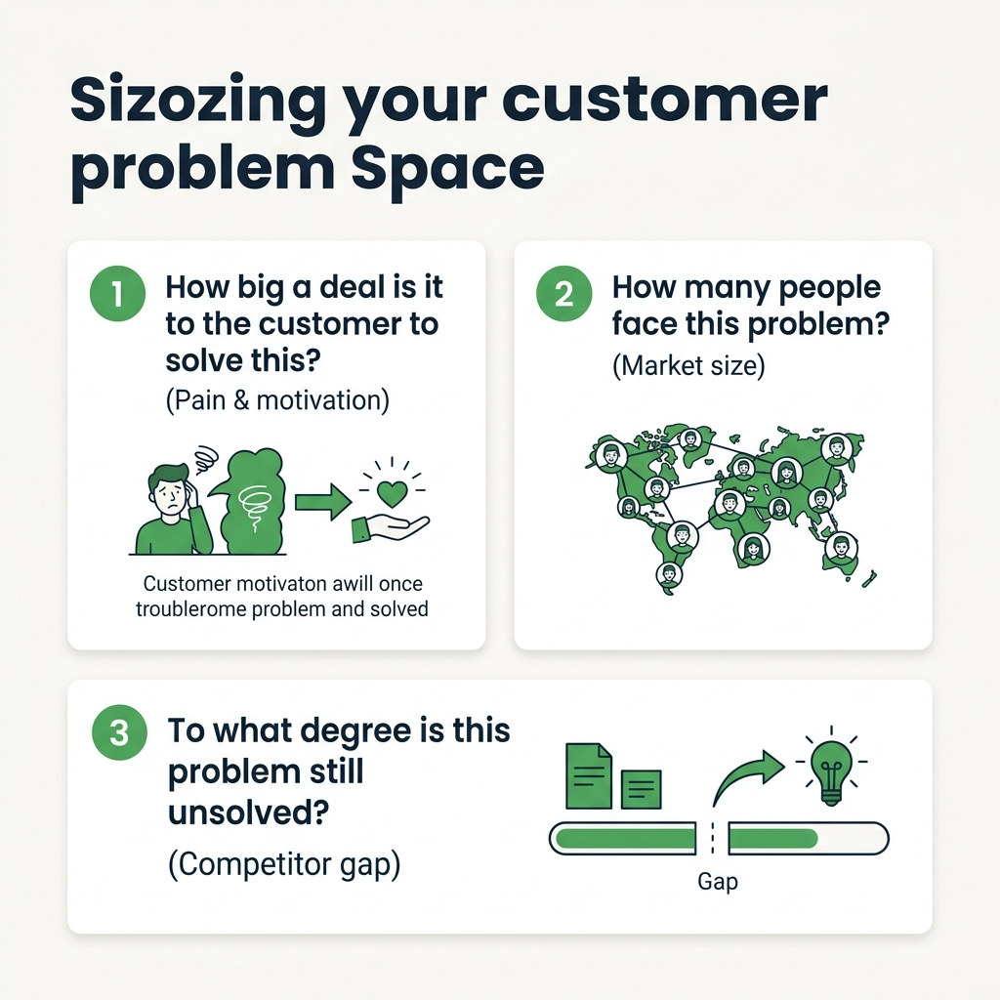
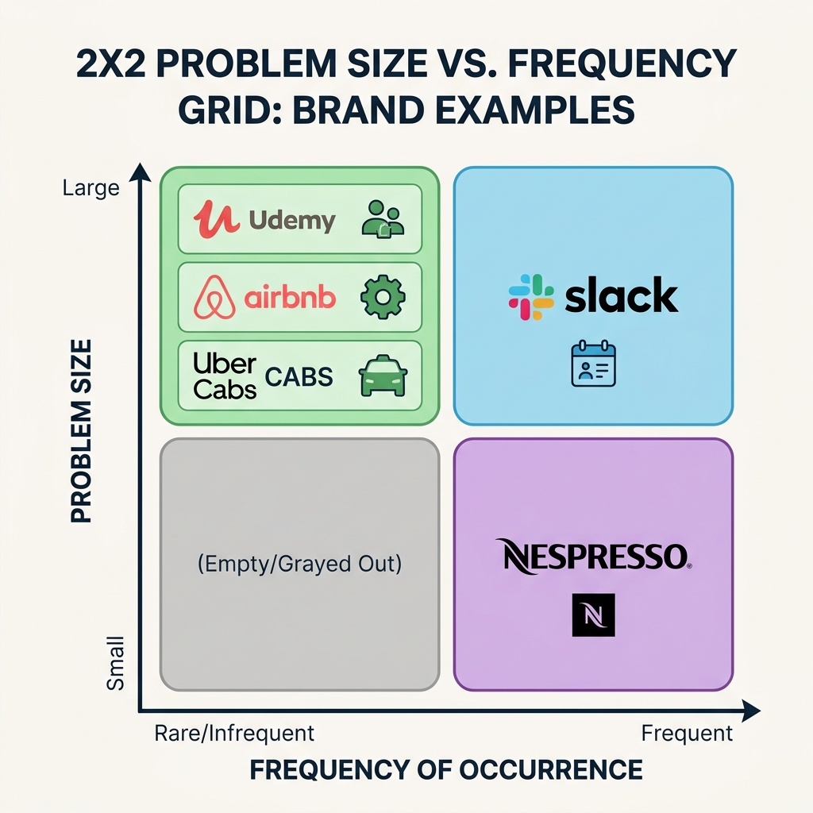
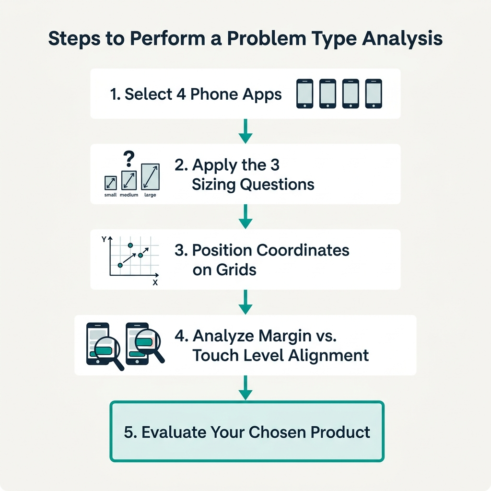

Your goal
Analyze how prominent brands position themselves on size, frequency, margins, and cost-to-serve coordinate matrices, and apply these configurations to evaluate your chosen product.
Lecture overview
This lecture covers the seventh practical exercise of the course: building a **Problem Type Analysis** for your product. It applies the validation matrices from the previous lecture to analyze the business models of leading brands.
Central argument
To validate a product strategy, PMs must evaluate the problem space from the customer's perspective rather than the company's development effort. Sizing a problem requires analyzing customer motivation, market volume, and competitive gaps. By mapping key case studies across size, frequency, price, and cost-to-serve matrices, PMs can identify viable business model configurations—such as B2B enterprise software, consumer marketplaces, or retail pod systems—and copy established pricing-to-touchpoint alignments to ensure their own product's commercial viability.
1. Sizing the Problem Space: The Three Questions
Problem size is defined by user demand, not engineering hours. Size is determined by three key questions:
- How big a deal is it to the customer to solve this? (Motivation & Pain)
- How many people face this problem? (Market Volume)
- To what degree is it still unsolved? (Parity Gap)

2. Case Studies: Size vs. Frequency
Mapping brand profiles:
- Slack: Large & Frequent (workplace collaboration).
- Udemy: Large & Infrequent (skill development, sporadic usage).
- Nespresso: Small & Frequent (daily coffee routine).
- Airbnb: Large & Infrequent (holiday homestay booking).
- Uber Cabs: Large & Infrequent/Rare (getting to destination safely when stranded).

3. Case Studies: Price vs. Cost-to-Serve
Mapping touchpoints and pricing margins:
- Slack (High Price / High Touch): Enterprise contract values with high corporate sales rep overhead.
- Nespresso (High Price / High Touch): Massive capsule gross margins offset by physical boutique and supply chain operations.
- Airbnb (High Price / Low Touch): Large booking values with automated matching and low transaction overhead.
- Udemy (Low Price / Low Touch): Low course prices supported by self-serve matching and support delegation to instructors.
- Uber Cabs (Low Price / Low Touch): Low ride price points supported by automated app matching and in-app support workflows.
Practical Product Management example
Situation
A PM is designing a remote usability testing tool where designers can hire testers to review prototypes. The target pricing is set at $15 per test. The operations team proposes that for every test, a customer success representative should manually review the screencast video to verify audio quality before releasing it to the designer.
Decision
The PM maps the product on the Price vs. Cost-to-Serve Matrix. Price: Low ($15/test). Proposed Cost-to-Serve: High (requires human labor to watch every video). The PM rejects the operations team's proposal. They pivot the strategy and direct the engineering team to build an automated, client-side mic tester in the recorder app. This script checks audio levels and ambient noise programmatically before the tester can submit the video.
Reasoning
Watching every video manually places the startup in The Danger Zone (low price with high touch). An automated mic check tool ensures basic quality programmatically. This keeps the touchpoint level at Low Touch, matching the B2C marketplace model of Udemy and Uber where quality verification is automated or crowdsourced.
Consequence
The automated mic check tool successfully blocks silent or noisy recordings before submission. Usability testing video quality remains high, and customer refund requests drop to under 1%. The startup scales to 5,000 monthly tests without hiring additional review staff, preserving its B2C self-serve profitability margins.
Transferable lesson
Never scale a low-price B2C marketplace using manual, human verification steps. You must automate quality checks and support workflows to maintain low touch-level operations.
Common misunderstandings
"A low-price product means we cannot afford high-end branding"
Correction: Nespresso sells a simple consumer product (coffee), which is technically low cost. However, they wrap it in high-end branding, luxurious retail boutiques, and premium packaging, allowing them to charge a massive margin markup. Do not confuse low cost-of-goods-sold with low-tier pricing. Evaluate your sales model by margins.
"If users don't use our product daily, the strategy is failing"
Correction: Udemy, Airbnb, and Uber solve infrequent problems. Travel and professional learning are not daily routines. Infrequent products are highly successful if the problem is large (high customer motivation to solve it when it happens). Do not force daily notifications or fake gamification loops onto a naturally infrequent product.
"We should handle customer support manually to build empathy"
Correction: Manual support is vital during the early discovery phase to understand user friction. However, once you enter the scaling phase for a low-price B2C product, manual support must be replaced by automated self-serve flows. Empathy must be built into the product design itself, not delivered via expensive human support lines.
Key concepts and definitions
- Problem Type Analysis: The practice of evaluating a product's market viability based on its size, frequency, pricing, and touch level.
- Touch Level: The amount of manual human interaction (sales, support, success calls) required per customer.
- Sizing Metrics: Sizing a customer problem based on pain severity, market volume, and competitive gaps rather than code complexity.
- Margin-Led Pricing: Defining "high price" by high gross margins (revenue minus operational cost) rather than checkout tag alone.
- Two-Sided Delegation: Reducing Cost-to-Serve by delegating support/supply quality verification to marketplace participants (e.g. Udemy instructors).
Key takeaways
- Size problems by customer pain, market volume, and competitor gaps rather than code complexity.
- Slack represents a Large & Frequent B2B problem with a High Price / High Touch enterprise business model.
- Udemy represents a Large & Infrequent problem that is viable due to Low Price / Low Touch marketplace delegation.
- Nespresso represents a Small & Frequent problem supported by high margin retail markup (High Price / High Touch).
- Airbnb represents a Large & Infrequent B2C problem utilizing a High Price / Low Touch matching platform.
- Uber represents a Large & Rare B2C problem supported by a Low Price / Low Touch automated dispatch model.
- Infrequent products are highly viable if the problem size/motivation is large (Airbnb, Udemy).
- Automate onboarding and quality checks for low-price products to avoid scaling into the Danger Zone.
Visual summary

One-minute review
Ask the 3 Sizing Questions: Analyze customer motivation, market size, and parity gaps to calculate the problem space volume. Coordinate the Matrix: Map where your product sits relative to case studies (Slack, Udemy, Nespresso, Airbnb, Uber). Align the Model: Ensure low pricing is backed by self-serve low-touch operations, and high human touch is supported by enterprise-grade pricing margins.
Interactive Practice
Examine the profiles of our 5 case study companies. Click on the tabs below to toggle their details and see how they align pricing and touchpoints.
Slack Profile
Problem type: Large & Frequent (workplace collaboration replacement).
Business Model: High Price / High Touch.
Strategic Context: Displacing Microsoft Teams requires long sales cycles and active support, funded by enterprise contract value margins.
Udemy Profile
Problem type: Large & Infrequent (learning is high value but sporadic).
Business Model: Low Price / Low Touch.
Strategic Context: Two-sided marketplace delegation shifts student support overhead to the instructors, keeping Udemy's touch cost near zero.
Nespresso Profile
Problem type: Small & Frequent (coffee routine multiple times per day).
Business Model: High Price (Margin) / High Touch.
Strategic Context: Physical retail boutiques and pod distribution lines require high operations cost, funded by massive gross margins on pods.
Airbnb Profile
Problem type: Large & Infrequent (vacation homestays are stressful but rare).
Business Model: High Price / Low Touch.
Strategic Context: High transaction booking value with automated matching. Host onboarding is high touch, but matching transactions are automated.
Uber Cabs Profile
Problem type: Large & Rare/Infrequent (getting home safely when stranded).
Business Model: Low Price / Low Touch.
Strategic Context: Low single ride price. Matching, routing, and support are fully automated via app workflows with zero human dispatchers.
Apply problem type classifications. Review the scenarios below and select the correct strategic path.